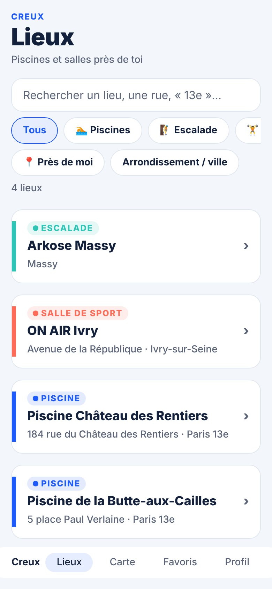
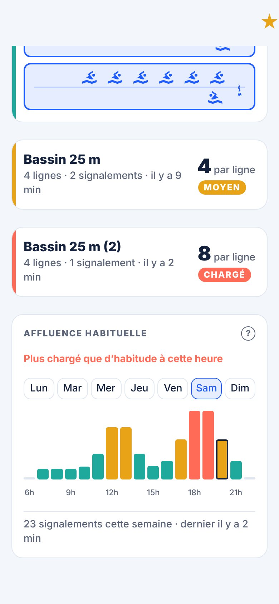
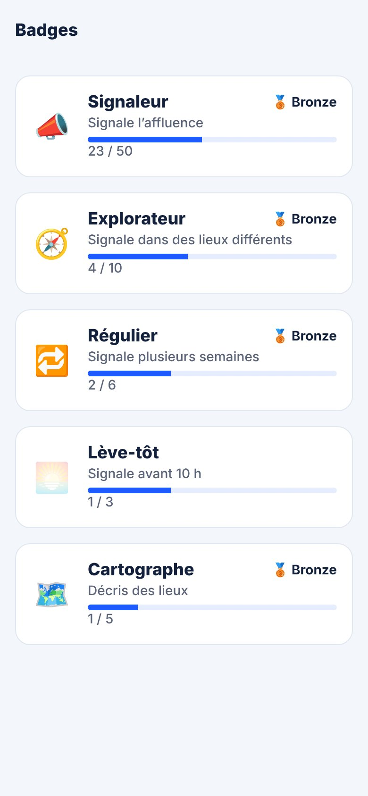

🏊
Creux
Combien de monde, maintenant. Bassin par bassin, à la salle.
Creux montre l’affluence des piscines et des salles de sport du Grand Paris, en temps réel, grâce aux signalements des usagers. Un geste suffit pour signaler : on touche la ligne d’eau qui ressemble à ce qu’on a vu.




- Temps réelAffluence de chaque bassin, attente au matériel à la salle, mise à jour en continu.
- Affluence habituelleLes heures calmes et chargées, jour par jour.
- Un gesteDes images à toucher, pas de chiffres à réfléchir.
- Favoris et carteTes lieux en étoile, les autres regroupés quand on dézoome.
- BadgesBronze, argent, or pour celles et ceux qui contribuent.
- Respect de la vie privéePas de position envoyée, que des moyennes anonymes.
Creux est en bêta sur iPhone (TestFlight). Android arrive ensuite.